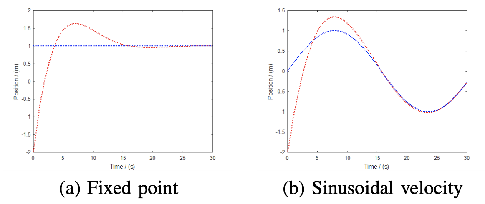

Overview
This work applies geometric PID control for
asymptotic tracking of a desired trajectory by a hoop robot
in the presence of disturbances and uncertainties. The hoop
robot, consisting of a circular body rolling without slip along
a one-dimensional surface, is a planar analog of a spherical
robot. A variety of coupled mechanical system may be used to
actuate the hoop robot. This paper specifically considers two
different actuators, one a simple pendulum and the other an
internal cart. The geometric PID controller requires the plant
to be a simple mechanical system, and the hoop robot does
not satisfy this condition. Therefore a geometric inner loop is
presented that gives the hoop robot the required structure. This
procedure is here referred to as feedback regularization. Feedback regularization—in contrast to feedback
linearization—is
coordinate independent, and hence reflects the fundamental
system structure. Note also that the resulting mechanical system
is nonlinear and underactuated. Subsequently, the geometric
PID outer loop guarantees almost-semiglobal tracking with
locally exponential convergence, and the integral action of the
PID guarantees robustness to constant disturbances and parameter uncertainties, including constant inclination of
the rolling
surface. The complete tracking controller is the composition
of the two coordinate-indep

Numerical simulation results for a trajectory tracking hoop robot..
Bibtex
@inproceedings{madhushani2017feedback,
title={Feedback regularization and geometric pid control for trajectory tracking of mechanical systems: Hoop robots on an inclined plane},
author={Madhushani, TWU and Maithripala, DH Sanjeeva and Berg, Jordan M},
booktitle={2017 American Control Conference (ACC)},
pages={3938--3943},
year={2017},
organization={IEEE}
}